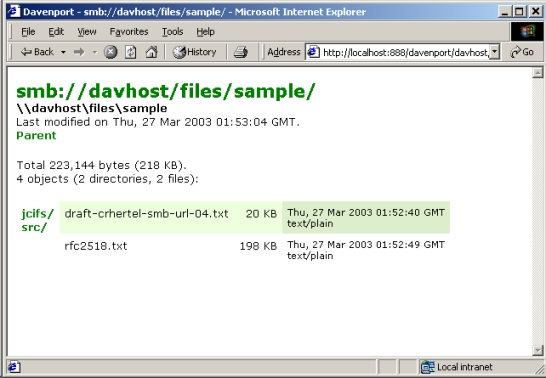
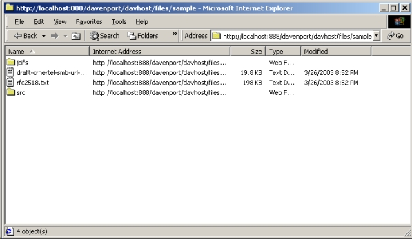

Davenport is a servlet which provides a WebDAV gateway to SMB shared resources. Typical usage would be to provide web-based read and write access to Windows shared drives.
WebDAV clients, such as Windows' "Web Folders", can copy files to and from the shares over HTTP. Non-WebDAV-capable web browsers can also access the network, downloading files from shared folders in a seamless fashion.
Users access shared resources using their Windows domain username and password, so no account configuration is typically needed. When run over HTTPS, Davenport provides a secure means of accessing internal shared drives over the internet without requiring a VPN.
Davenport is free software, provided under the GNU Lesser General Public License. It can be obtained from the Davenport SourceForge project site at:
http://sourceforge.net/projects/davenport
The download area (from which the software can be obtained directly) is at:
http://sourceforge.net/project/showfiles.php?group_id=78146
Releases are distributed in both .zip and .tgz formats.
The Davenport binary is provided as a Java WAR file for installation in a Servlet container. You should be able to deploy the WAR by copying it into the "webapps" directory under your container, or by following instructions provided in your Servlet container's documentation.
After deploying the WAR file, you should be able to browse SMB resources. To list the shares on an SMB server "smbserver", you would enter into your web browser:
http://webserver/davenport/smbserver/
This will bring up the default directory listing, which will look something like this:

This will list all shares on the "smbserver" server; by clicking one of the shares, files will be listed, and so forth.
Clicking the header link at the top of the screen ( "smb://davhost/files/sample/" in the screenshot above) will reopen the item as a Web Folder in Internet Explorer:

You can drag and drop files to and from the Web Folder, create and delete directories, and perform other file operations. You can open a URL as a Web Folder directly by using the "File -> Open" menu in Internet Explorer, and selecting "Open as Web Folder".
Configuration of Davenport is performed by editing the "web.xml" deployment descriptor. The packaged descriptor contains commented configuration settings, and provides detailed descriptions of all available items. Reviewing this file is recommended prior to deployment, as configuration items may change between releases.
jCIFS environment options can be set via the Davenport servlet's deployment descriptor. jCIFS settings of particular interest to the Davenport servlet are listed below.
| Parameter | Description | ||||||
|---|---|---|---|---|---|---|---|
| jcifs.smb.client.domain | Provides the default domain if not specified during HTTP Basic authentication. If the user enters "username" rather than "DOMAIN\username", this specifies the default domain against which the user should be authenticated. | ||||||
| jcifs.http.domainController | Provides the IP address of the server used to authenticate clients. This is only used for browsing the root ("smb://") and workgroups. For servers, shares, directories and files, the corresponding server is used. If not specified, the system will attempt to locate a controller for the domain specified in jcifs.smb.client.domain. It is not necessary for this to specify a real domain controller; a workstation can be used. | ||||||
| jcifs.http.enableBasic | Enables/disables HTTP Basic authentication support. This allows non-NTLM-capable browsers to successfully authenticate. NTLM-capable clients will authenticate using NTLM. This defaults to true. Setting this to false will disable HTTP Basic authentication entirely, allowing only NTLM-capable browsers to connect. | ||||||
| jcifs.http.insecureBasic | Enables/disables HTTP Basic authentication over an insecure channel. Normally, HTTP Basic authentication will only be available over HTTPS. Setting this to true will offer HTTP Basic authentication over insecure HTTP, sending login information over the network unencrypted. This is a severe security risk, and is strongly advised against. This defaults to false. | ||||||
| jcifs.http.basicRealm | Specifies the HTTP Basic realm that will be presented during authentication. Defaults to "Davenport". | ||||||
| jcifs.smb.lmCompatibility |
Controls the NTLM authentication "level". This setting mirrors the
Windows LMCompatibilityLevel registry setting. This is
detailed in Microsoft Knowledge Base Article 239869;
it can be set to one of the following levels:
|
||||||
| jcifs.netbios.wins | Specifies the IP address of the WINS server. This is recommended if a WINS server is present; it is required when accessing hosts on different subnets. | ||||||
| jcifs.resolveOrder | A comma-separated list of name resolution methods. This specifies which hostname resolution methods will be used, and in what order. Possible values (in default order) are LMHOSTS, WINS, BCAST, and DNS. |
Further details regarding configuration of the jCIFS environment can be found in the jCIFS documentation (available from http://jcifs.samba.org).
Additionally, you can specify your own custom handlers for HTTP methods. By implementing the smbdav.MethodHandler interface, you can provide your own behavior for GET, PUT, etc. requests. To enable your handler, add an initialization parameter with the handler's classname. For example:
<init-param>
<param-name>handler.GET</param-name>
<param-value>com.foo.MyGetHandler</param-value>
</init-param>
This will install a com.foo.MyGetHandler instance as the handler for GET requests.
The default GET handler also has configuration options which can be set in the Davenport initialization parameters:
| Parameter | Description |
|---|---|
| directory.xsl |
Provides the location of the default directory view stylesheet.
If a collection is accessed by a non-WebDAV-capable browser,
an XSL stylesheet is used to present the directory listing
in HTML. The location of the default stylesheet is given here.
The default value, "/META-INF/directory.xsl", is the default Davenport directory view (shown above). Davenport also ships with "/META-INF/dos.xsl", a more nostalgic view (screenshot). |
| directory.configuration |
The location of the directory stylesheet configuration page
can be specified using this parameter. Clients can access the
configuration page by pointing their browser at a collection and
specifying "configure" as a URL parameter, i.e.:
http://server/davenport/?configure This allows the user to select a preferred directory view stylesheet. |
For more details on configuring the GET handler, see the API documentation for the smbdav.DefaultGetHandler class.
Davenport is built using Apache Ant, available at http://ant.apache.org. Build targets are:
| Target | Description |
|---|---|
| dependencies | Checks that all class dependencies are met. |
| compile | Builds the Davenport classes. |
| jar | Packages the Davenport classes into a .jar file. |
| war | Packages the Davenport application into a .war file for deployment. |
| javadoc | Creates the Javadoc API documentation. |
| all | Performs all of the above. |
| clean | Removes build artifacts. |
| allclean | Removes distribution and build artifacts. This includes the .jar and .war files, .class files, and the Javadoc API documentation. |
| davenport | Builds the "all" target, followed by "clean". This reproduces the distribution package contents. |
| distrib | Builds the "davenport" target, and additionally recreates the .zip and .tgz downloadable distributions. |
| checksum | Creates MD5 checksums of the .zip and .tgz distributions (Ant 1.5 or higher). |
| usage | Displays a list of the available targets. |
Building Davenport may require that you add dependencies to the Ant classpath. The build process will inform you which APIs could not be located. Currently, Davenport requires implementations of the following APIs:
The jCIFS library, version 0.7.11 or higher, is also required. This library is bundled with Davenport, and can also be obtained from the jCIFS web site (http://jcifs.samba.org).